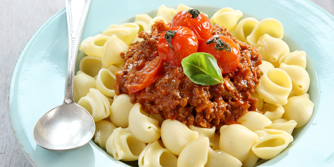

Macaroni a la speciaal
Deze macaroni is anders dan de versie die hier in nederland vaak gegeten wordt. Ook is deze niet hetzelfde als die van het thuisland Italie. Deze macaroni wordt namelijk gemaakt met pipe rigate. De rede dat we deze gebruiken is omdat de saus en het gehakt er dan goed in gaan, waardoor de smaak vele malen verbeterd.
Bereidingswijze
Breng ten eerste 2 liter water aan de kook. Zodra dit is gedaan moeten de schelpjes erin. Na 10 minuten zijn de schelpjes klaar.
Bak de stukjes gehakt en doe de saus erbij wanneer het gehakt gaar is. Roer dit goed door terwijl je het aan de kook brengt.
Voeg vervolgens de pipe rigate erbij en roer deze door.
Voeg tenslotte de kaas erbij en roer deze goed door.
Het gerecht is af. Eet smakelijk.
